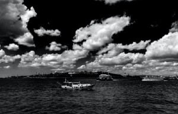

Caught on the Lake
The George family has spent many summer days on the Lake. If it's sunny, they were out in the sun, swimming and boating all day long. Last month, they got themselves into an unexpected suprise. As they swam around their boat in the middle of the lake, a slight drizzle began that soon turned into a down pour. The all jumped back into the boat, but realized the water was to rough to go anywhere. They quietly awaited the passing of the storm. The boat rocked back and forth, and some of the children began to be frightened. The youngest suprised everyone by starting to sing. "You are my sunshine, my only sunshine", she started. The whole family soon joined in. The storm lasted another hour, but they happily passed the time by singing as they sat, drenched, on their boat.